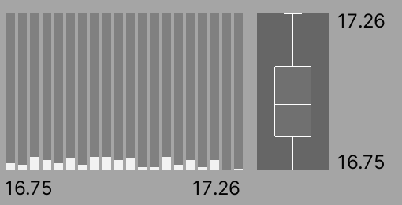
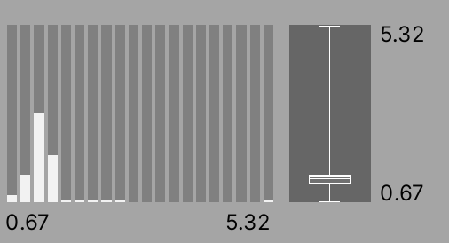
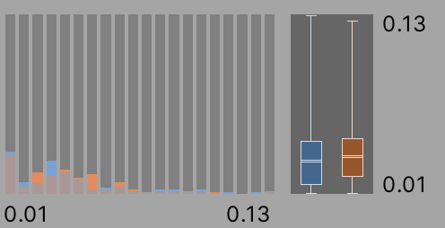
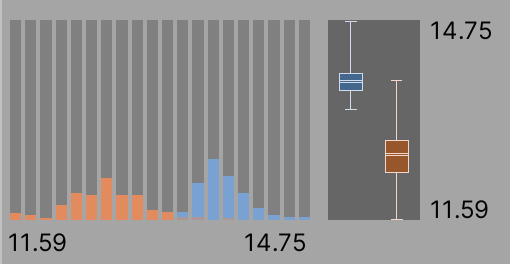
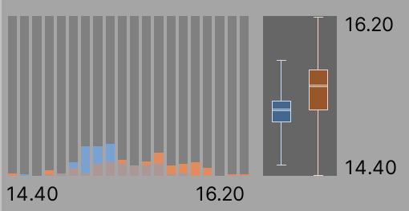

Statistics in the Profile Analyzer¶
The Profile Analyzer displays a number of statistics about the data you’re analyzing in the Frame, Thread, and Marker Summary panes..
Available statistics¶
Statistic |
Description |
|---|---|
Min |
Min represents the lowest (minimum) value for the marker or frame time. |
Max |
Max represents the largest (maximum) value for the marker or frame time. |
Median |
Median is the middle value of a data set, and separates the higher half from the lower half of a data set. |
Mean |
Mean is the average value in a data set. It represents the sum of all of the values in the data set divided by the number of values in the data set. |
Lower and Upper Quartiles |
The lower quartile is the middle number between the smallest number and the median of the data set. The upper quartile is the middle value between the median and the highest value of the data set. |
Interquartile Range |
The interquartile range shows the range of values in the central 50% of the data. The range is equal to the difference between the upper and lower quartile values. |
How the statistics are represented¶
The statistics are displayed in several ways in the Profile Analyzer. In the Frame, Thread, and Marker summary panes, the statistics are displayed as raw numbers as well as in histograms and box and whisker plots to give a visual representation of time distribution. The following section gives some examples of some common distributions you might find in your analysis.
Single view¶
Even distribution¶

In this example, the graphs display a distribution of marker calls that range from 16.75ms to 17.26ms. The histogram on the left shows that a lot of the buckets are being hit at a fairly even amount. This is also evident in the box and whisker plot on the right where the box is large and is towards the middle of the upper and lower bounds.
Outlier¶

In this example, the graphs display a distribution of marker calls that range from 0.67ms to 5.32ms. The histogram on the left shows that the lower end buckets are used the most and only some of the more expensive buckets are hit. This is also reflected in the box and whisker plot, where the box appears towards the bottom of the range but the whisker, or upper bound of the range, is high up.
Compare view¶
Similar distribution¶

In this example, there are two distributions that are similar, and both the histogram and box and whisker plots show a very similar pattern. This shows that the marker activity in both sets is similar.
Different distribution¶

In this example, there are two distributions that are different; both the histogram and the box and whisker plots show that the marker in the left (blue) data set ran for longer. The histogram shows that the blue data set used more expensive buckets, and the box and whisker plot is drawn higher up on its range. This means that the marker activity in left (blue) data set is more costly and should be investigated further.
Overlapping distributions¶

In this example, there are two distributions that are similar. Both data sets have the same lower bound and have some overlap in the middle of the range, but the right (orange) dataset uses some of the more expensive buckets and has a higher upper bound. This means that the activity in right (orange) data set is more costly or is being called more times and should be investigated further.